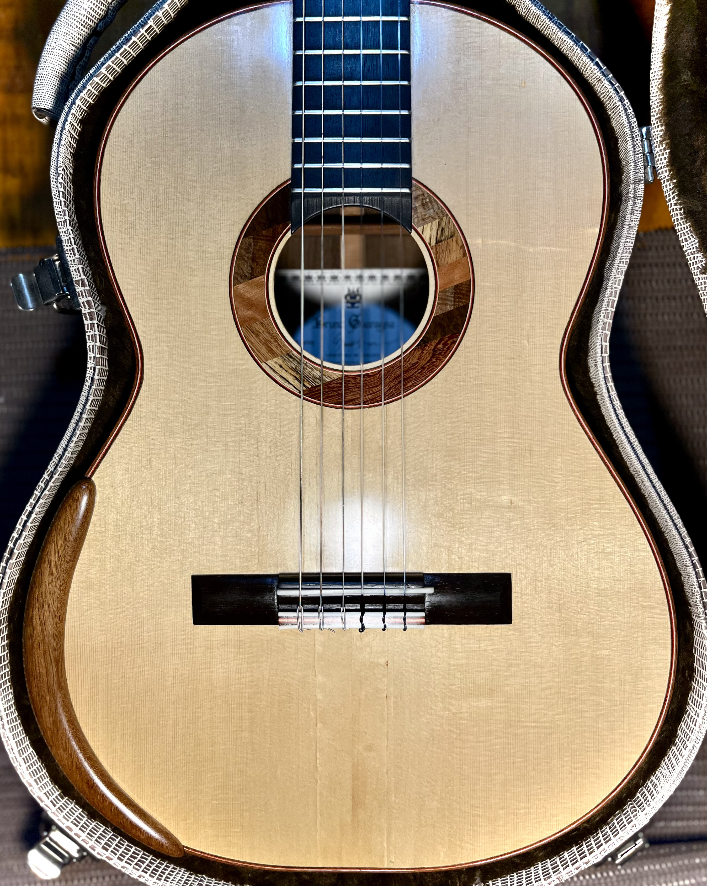
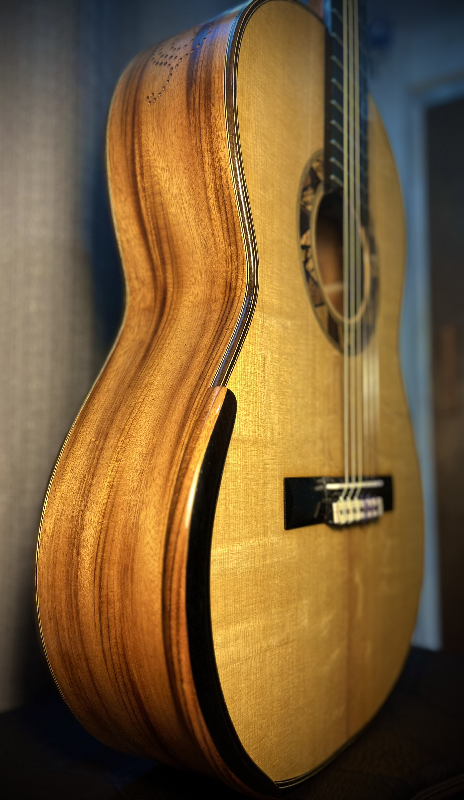
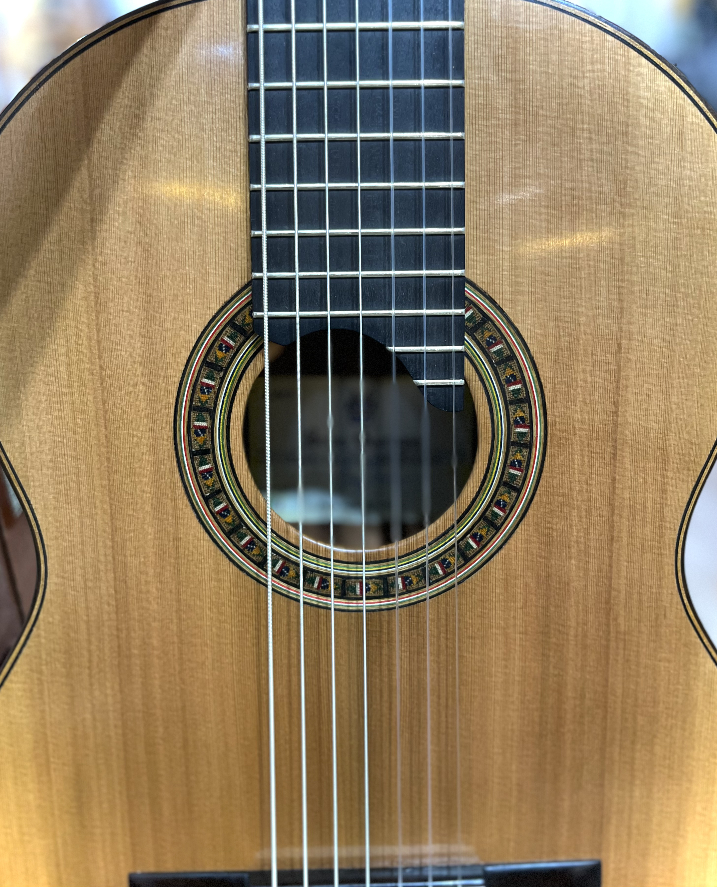
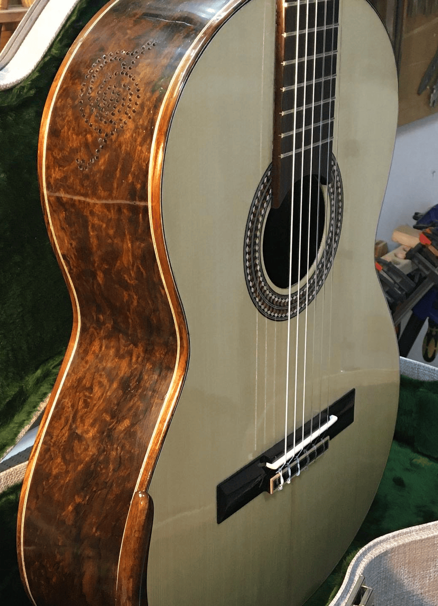
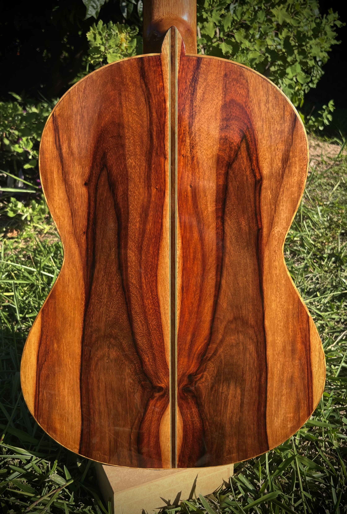
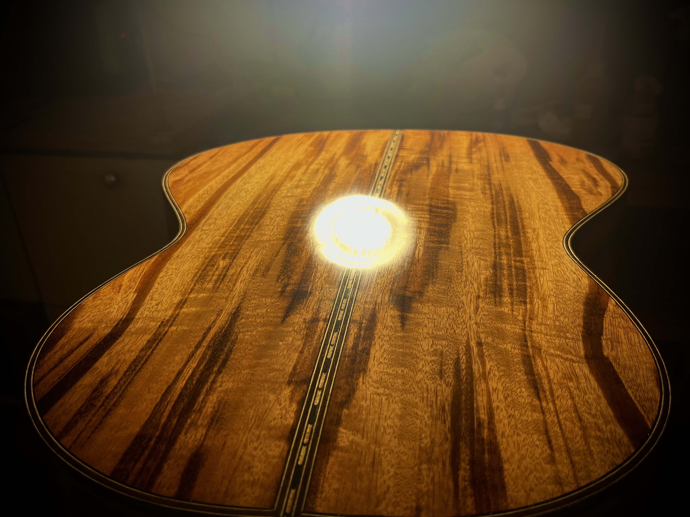
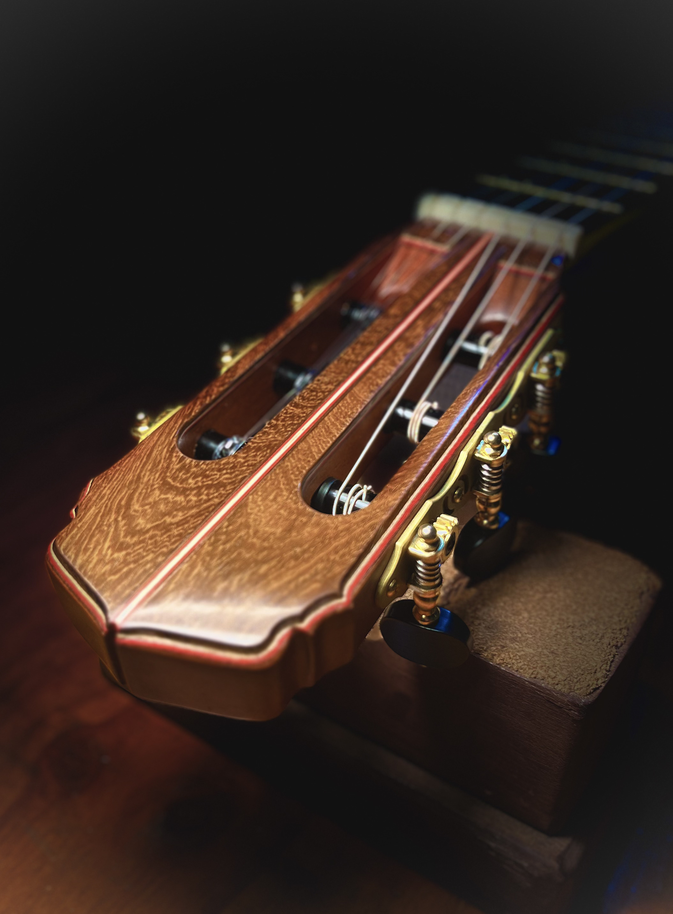
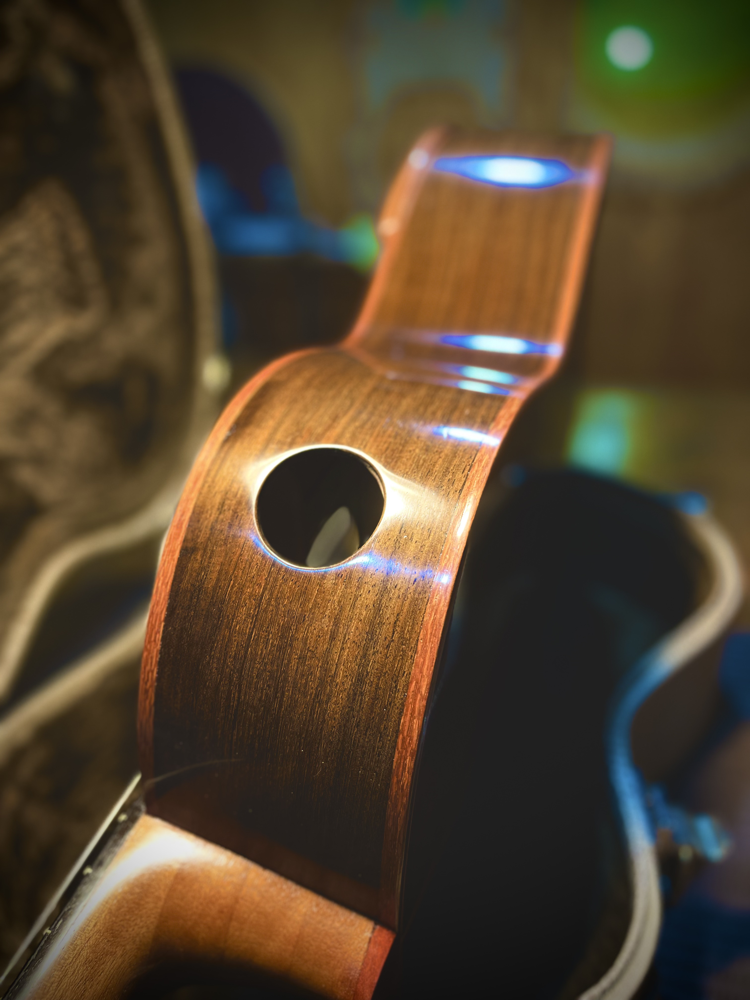
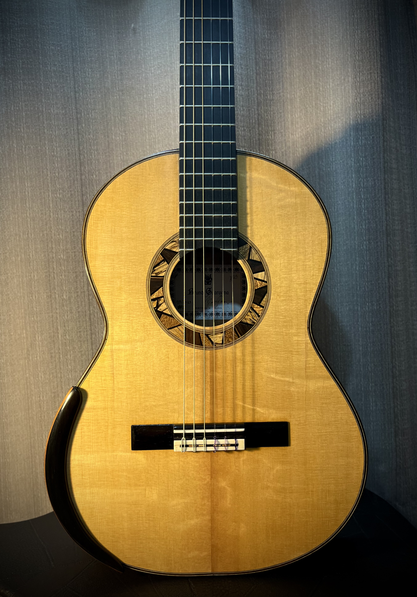

Modelos de violões
Modelo um
Características
- Tampo de cedro canadense ou pinho/abeto europeu;
- Laterais e fundo podendo ser: Gonçalo Alves, Pau
Ferro, Roxinho, entre outras;
- Escala em Ébano Africano;
- Roseta clássica tradicional;
- Braço de Cedro ou Mogno;
- Cavalete em Jacarandá;
- Comprimento de corda 650mm ou 640mm;
- Tarraxas Der Jung rolamentada.
Conheça também os opcionais








